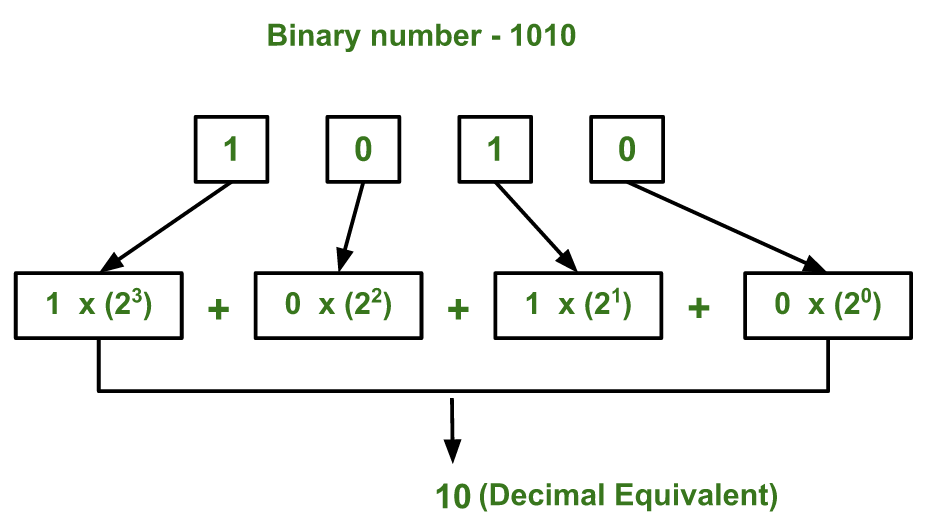

给定二进制数作为输入，我们需要编写一个程序将给定的二进制数转换为等效的十进制数。
例子：
Input : 111 Output : 7 Input : 1010 Output : 10 Input: 100001 Output: 33
想法是从最右边的数字开始提取给定二进制数的数字并保持变量dec_value。 在从二进制数中提取数字时，将数字乘以适当的基数（2的幂）并将其添加到变量dec_value。 最后，变量dec_value将存储所需的十进制数。
例如：
如果二进制数是111。
dec_value = 1 *（2 ^ 2）+ 1 *（2 ^ 1）+ 1 *（2 ^ 0）= 7
下图解释了如何将（1010）转换为等效的十进制值：

以下是上述想法的实现：
C ++
// C++ program to convert binary to decimal
#include<iostream>
using namespace std;
// Function to convert binary to decimal
int binaryToDecimal(int n)
{
int num = n;
int dec_value = 0;
// Initializing base value to 1, i.e 2^0
int base = 1;
int temp = num;
while (temp)
{
int last_digit = temp % 10;
temp = temp/10;
dec_value += last_digit*base;
base = base*2;
}
return dec_value;
}
// Driver program to test above function
int main()
{
int num = 10101001;
cout < <binaryToDecimal(num)<<endl;
}